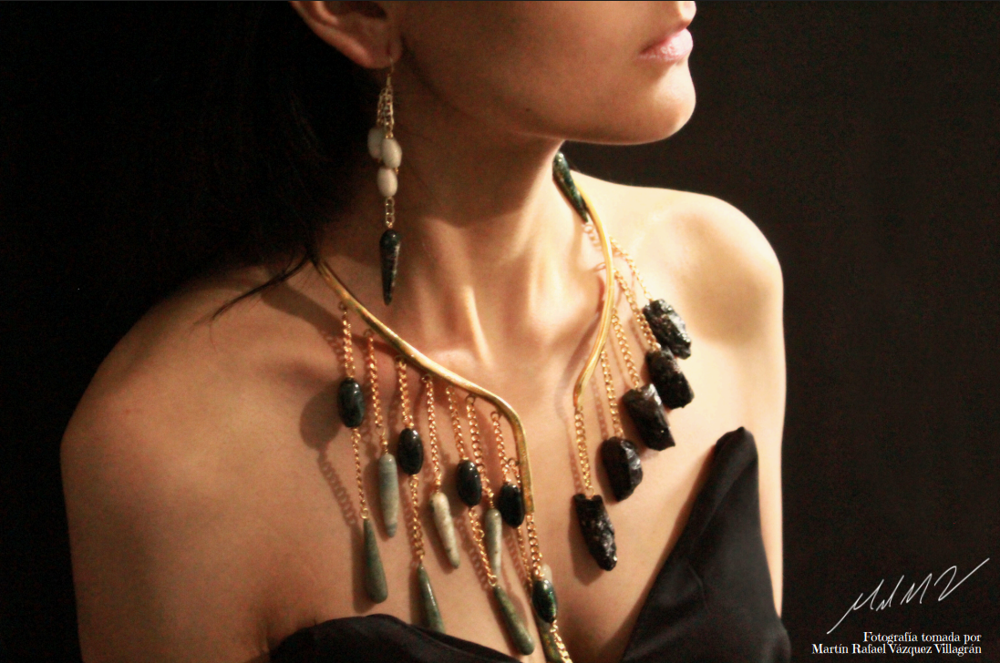
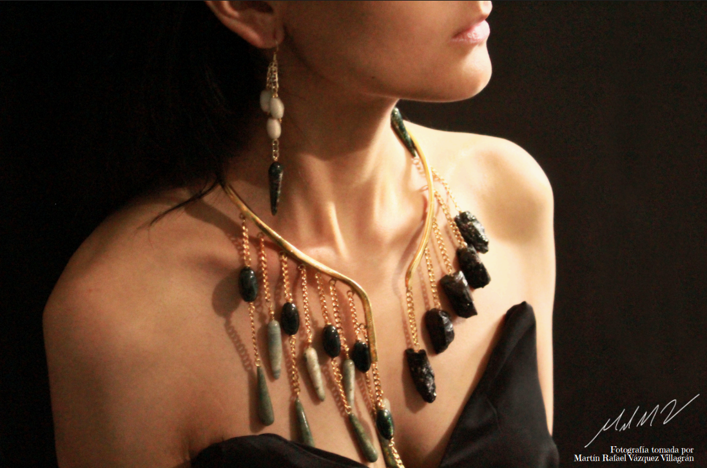

Sobre la colección
La colección Guardianas del Legado Kayan es un tributo a la valentía y resistencia de las mujeres Kayan, dirigida a las mujeres jóvenes y adultas de entre 18 a 50 años que estén comprometidas a valorar la historia, cultura y justicia social de las mujeres jirafa de Tailandia.
La ya mencionada, lleva consigo en cada una de sus piezas una historia de resistencia y una declaración de solidaridad, conciencia y empatía hacia la tribu Kayan afectada y marcada por la injusticia, persecución y el desplazamiento forzado debido a conflictos políticos y étnicos de su región de origen.

 
